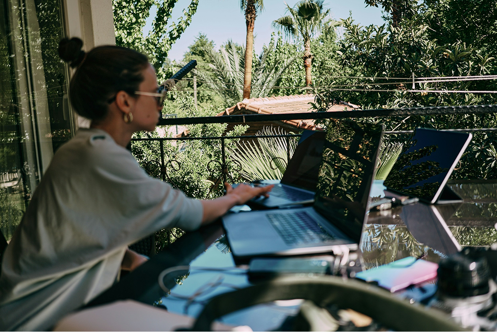
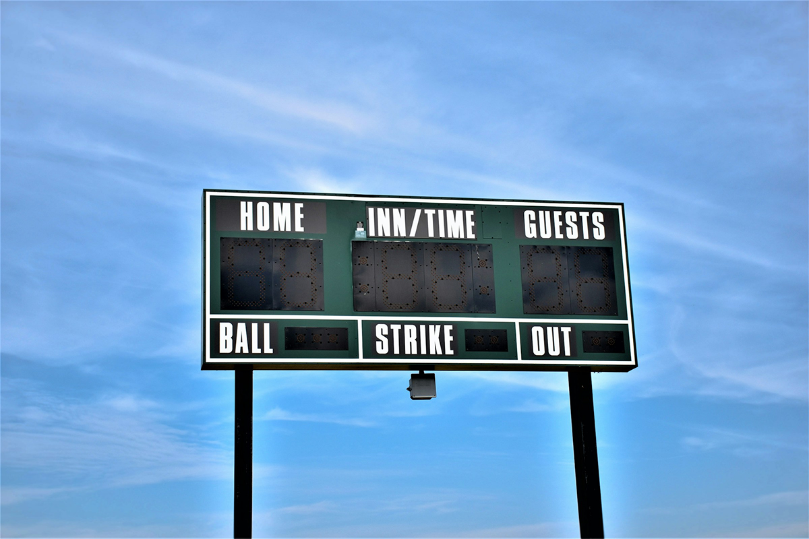
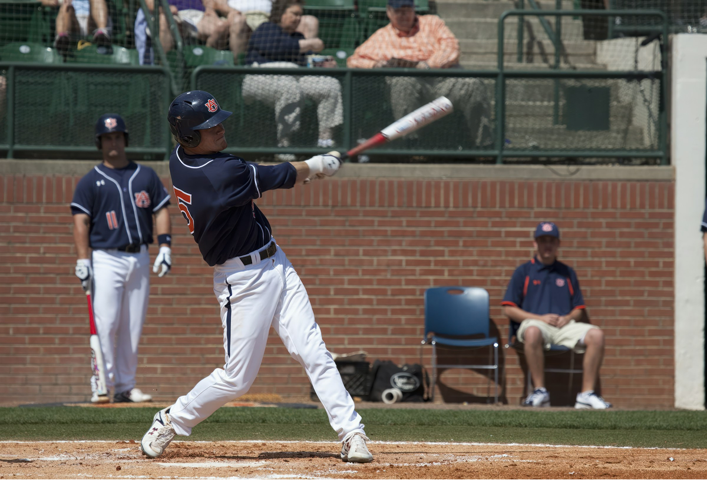
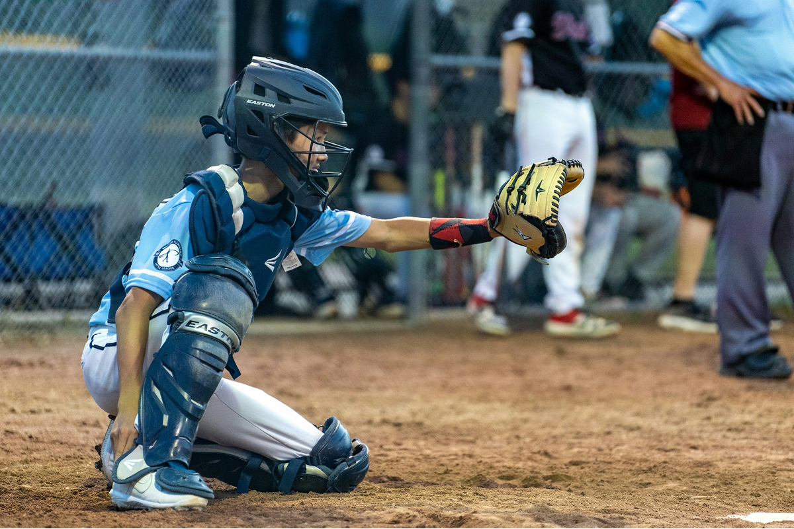
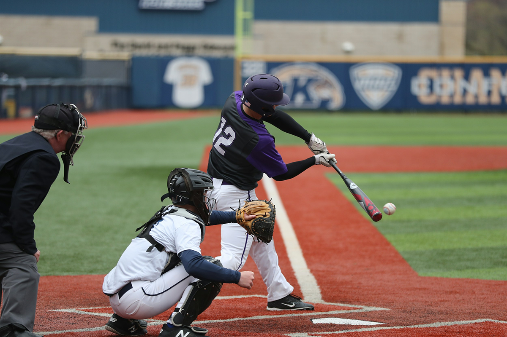

《PM 的隨手寫誌》
邊旅行邊工作的實踐紀錄。紀錄了一段在旅途中遠端工作的實驗過程——從選擇適合的城市、安排工時與網路環境，到如何兼顧專注力與探索欲之間的拉扯。不是光鮮亮麗的打卡照，而是關於自由背後的規劃與取捨，以及在異地建立生活節奏的每一個小決定。如果你也曾嚮往「邊走邊工作」的生活，或許這篇能讓你更貼近現實，也更靠近理想。

邊旅行邊工作的實踐紀錄。紀錄了一段在旅途中遠端工作的實驗過程——從選擇適合的城市、安排工時與網路環境，到如何兼顧專注力與探索欲之間的拉扯。不是光鮮亮麗的打卡照，而是關於自由背後的規劃與取捨，以及在異地建立生活節奏的每一個小決定。如果你也曾嚮往「邊走邊工作」的生活，或許這篇能讓你更貼近現實，也更靠近理想。

與其說是任務追蹤，倒不如說是文化輸出的過程。這篇文章從棒球比賽的「分數板」出發，思考如何透過明確且即時的資訊揭示，讓團隊更有方向感、也更清楚自己的角色與責任。
靈感來自《魔球》電影，探討產品管理中的績效制度與資料決策。當我們試圖用數據找到「最省預算卻最有效的做法」時，是否也可能忽略了某些更深層的人性與文化指標？

面對即將收尾的專案或提案關鍵時刻，我們該堅守初衷，還是改變策略？這篇文章從比賽末段的戰術安排談起，延伸到產品最後迭代與內部 buy-in 的時機選擇。

沒人喜歡失敗，但也沒人能永遠成功。這篇從三振出局的瞬間談起，分享如何用幽默與同理心消化失誤，也談失敗後的團隊文化，如何打造一種安心再戰的環境。
產品策略如同佈陣：該守哪裡、該放手哪裡，不能靠直覺決定。這篇文章討論如何根據數據、用戶行為與團隊資源，決定品牌與產品在市場上的位置與布局。

談設計流程時，常有兩個極端：一是「秀給 Stakeholders 看」、一是「能不能讓團隊真的串起來」。這篇文章探討如何平衡「展示感」與「實用性」，讓工具真的成為流程的一部分。

好的內容策略，不該每一篇都追求破壞性創新。這篇文章以棒球進攻節奏為比喻，談如何安排品牌溝通的「鋪陳、關鍵擊球、攻勢延續」，用節奏養出影響力。

作為最接近賽事全貌的角色，捕手必須洞察每一球的來向與對手意圖。這篇從捕手角色出發，比擬 PM 在專案溝通與利益平衡上的挑戰，並談如何建立同理、清晰與果斷的決策習慣。